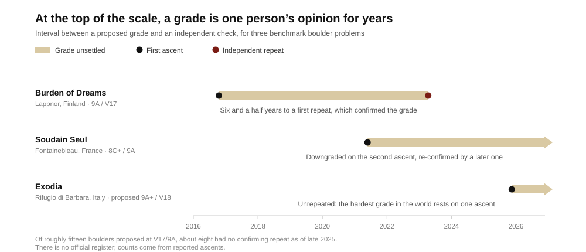

Founder audience: builders of athletic communities, training products and performance data systems. A grade is not a measurement of a rock. It is a price quoted by whoever has climbed the thing, revised by whoever climbs it next, and it carries exactly as much information as the number of independent transactions behind it. That number is usually tiny. The hardest boulder problem in the world, Exodia, was graded 9A+ by one person in November 2025 after more than 200 sessions across four years, and has never been repeated: a global benchmark with a sample size of one.8 Climbing spent forty years refining the notation. What actually made grades comparable was not better notation but the LED training board, which standardized the artifact so that the same problem could be attempted in a thousand gyms and the ratings could accumulate. That is the transferable lesson: if your ratings are noisy, fix the thing being rated, not the rating.
Two notations dominate. The V scale, developed by John Sherman at Hueco Tanks in the 1980s, runs in integers from V0 upward; the Fontainebleau scale, grown out of the forest south of Paris, combines a number with a letter and an optional plus — 6A, 6A+, 6B.59 Neither is a unit of anything. Both are labels a local community attaches to a band of expected effort.
The economic function of that label is to allocate attention. A climber has a finite number of sessions and needs to know which problems sit inside a range where effort converts into progress. The grade is the price signal that clears that market: it tells you what a problem will cost you before you spend anything.
Prices work when trades are frequent, observed and comparable. Boulder grades fail all three tests outdoors. A hard problem may see one ascent a decade. The ascent is observed by the ascensionist and perhaps a camera. And no two attempts are comparable, because effective difficulty moves with humidity, skin, temperature, hold wear, height, reach and which sequence the climber found. The UIAA publishes a cross-system comparison table and labels it explicitly approximate; that caveat is not modesty, it is a correct statement about a thin market.5
Soudain Seul shows the mechanism plainly. Simon Lorenzi established it in Fontainebleau in 2021 and proposed 9A. Nico Pelorson made the second ascent and proposed 8C+. Camille Coudert made a later ascent and supported 9A. Years on it is still quoted as a slash grade.6 Three of the strongest boulderers alive produced a price band, not a price. There is nothing wrong with the climbers or the scale. There are simply not enough transactions.

Most claims about grade accuracy are anecdotes. One study is not. Dean Scarff applied Whole-History Rating, the Bradley–Terry-based method used to rate game players, to 236,095 ascent records from theCrag covering 8,917 Australian sport routes and 3,000 climbers, treating each attempt as a match between a climber and a route. The model predicted outcomes at roughly 85% accuracy under ten-fold cross-validation. Its fitted difficulty ratings correlated with the published Ewbank grades at R² = 0.640, and adjacent grades overlapped substantially in fitted difficulty.3
Read that carefully, because it cuts both ways. Grades are informative: 85% predictive accuracy from ascent logs alone is high, and the published number carries most of the signal. But roughly a third of the variance in fitted difficulty is not captured by it, and neighbouring grades overlap enough that a single step up the scale is a category, not a unit. That residual third is the product opportunity, and it is large.
Two of the study’s methodological constraints are really product requirements in disguise. Routes needed at least two recorded ascents before the model would move off its prior — no rating without a second observation. And climbers needed both successes and failures on record, or reporting bias distorted the fit.3 Almost every consumer climbing app logs sends. A product that logs only sends is throwing away the half of the data that makes the estimate unbiased, then wondering why its recommendations are wrong.
The instructive move in the last decade of climbing was not a new scale. It was the standardized LED board. Fix the panel angle, fix the hold set, fix the coordinates, and a problem set in Seattle is the same problem in Seoul. On the Aurora systems every climb is community-graded, the shown grade is a weighted average of submitted opinions, the distribution of those opinions is visible next to it, and the number moves as votes accumulate.4 That is not a better rating algorithm than the guidebook’s. It is the same social process running on an artifact that finally supports repeated, comparable trades.
Bosi’s replica is the same insight arrived at by hand: to check a price, he had to reproduce the good. The boards industrialized that. It also arrived alongside a market big enough to absorb it: the US now has close to 700 commercial climbing gyms generating about $1.1 billion in revenue and growing at roughly 4.7% a year.7
The gym’s own colour circuits are the counter-example worth naming, because founders keep mistaking them for measurement. A commercial gym grades for safety, movement learning, wall turnover and customer experience. One colour may deliberately span several V grades; sets are recalibrated by staff every few weeks. That is inventory management with a difficulty label attached. Publishing a gym colour as a V-grade equivalent, without the gym’s own explicit mapping, converts an operations decision into a false measurement.
A product that reduces a climber to their hardest send teaches climbers to avoid slabs, chase soft benchmarks and treat one perfect-conditions day as permanent ability. The alternative is not a more elaborate score. It is keeping the evidence attached to the number.
| Field to store | Why the number is worthless without it |
|---|---|
| System, value, modifiers, area, guidebook edition | V4, 6A+ and a gym colour are three different objects; a shared integer column silently converts between them |
| Angle, hold type, start position, height | Explains why a grade reads soft or hard for a given body and style |
| Ascent type: flash, send, repeat, ongoing project | Separates route-reading from persistence — different abilities, different training |
| Attempts and sessions, including failures | The only way to get an unbiased difficulty estimate3 |
| Conditions and hold state | Effective difficulty moves without the printed grade moving |
| Number of independent ascents and spread of opinion | Distinguishes a priced problem from one person’s guess |
The last row is the one most products omit and the one that carries the most information. A grade with two hundred logged ascents and tight agreement is a price. A grade with one ascent is a quote. Showing both as the same bold number is the core dishonesty of climbing data products, and fixing it costs nothing but a sample-size label.
The durable rule: a rating is only as good as the reproducibility of the thing it rates. Climbing’s scales did not get better; the boulders got copied. Any product that grades performance — athletic, educational or professional — should ask which half of that problem it is actually in, because standardizing the task is usually cheaper than modelling the noise, and it is the only move that makes the ratings accumulate.